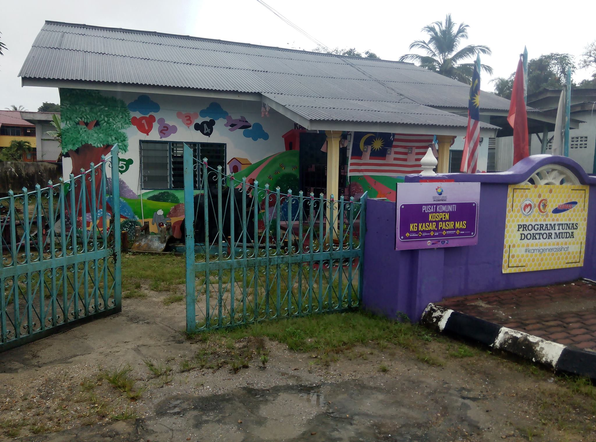
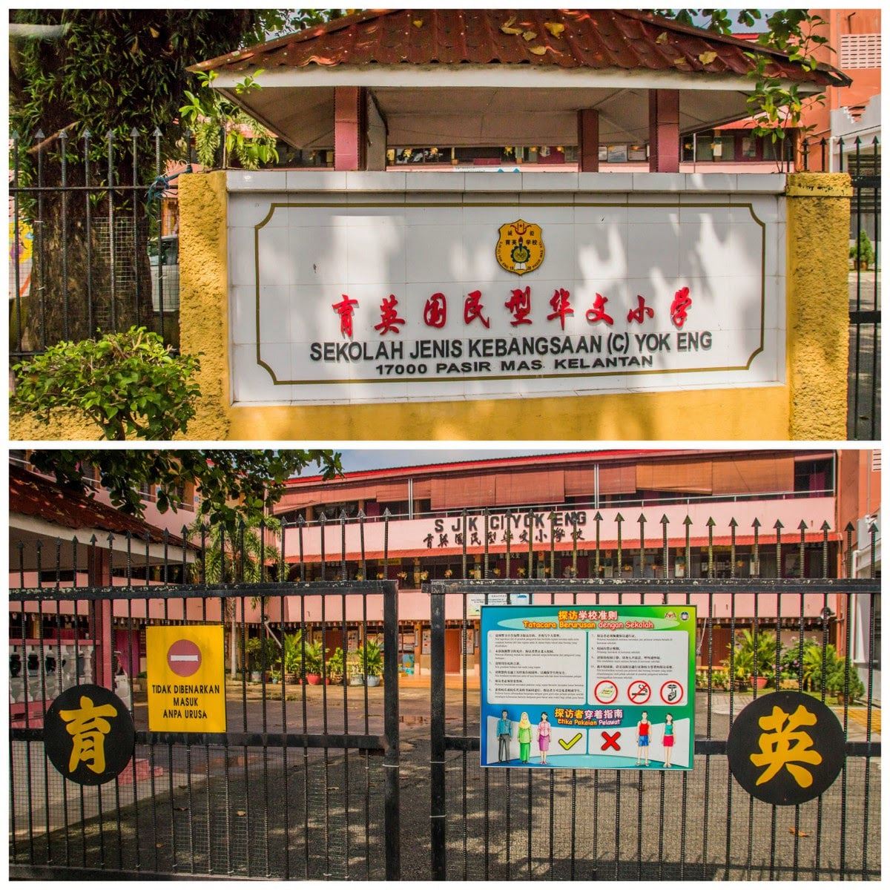
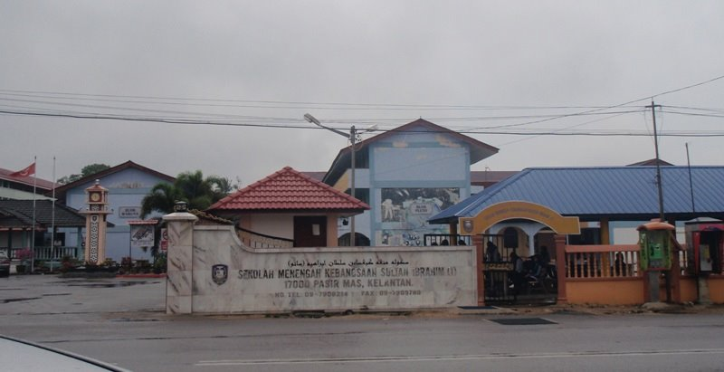

1. TABIKA KEMAS IHSAN, KAMPUNG KASAR,PASIR MAS

When I was 4 years old, my parents started taking me to this awesome nursery school. At first, I sobbed nonstop while I was there. My mum offered me candy and milo water once it was time to go home. I was so excited at the moment that I wanted to attend school every day.
2. TADIKA SJK(C) YOK ENG,PASIR MAS
My parents enrolled me in Tadika SJK(C) Yok Eng while I was between the ages of 5 and 6. I love this school greatly since it allows me to study Mandarin, a foreign language. I struggled at first to adjust to being at that school, but slowly I worked up the bravery to enrol. It was enjoyable and I also learned a lot about a new culture.
3. SEKOLAH RENDAH JENIS KEBANGSAAN (SJK(C) YOK ENG),PASIR MAS

I began attending the same SJK(C)YOK ENG as a primary school student when I was 7 years old and continued until I was 12 years old. With the exception of the subjects Malay, English, and Islamic Learning, this school only uses Chinese (Mandarin). Islamic education courses are only compulsory of Muslim pupils. For Muslim kids at this institution, Fardhu Ain is also available. However, I'm impressed with my current level of Mandarin proficiency.
4. SEKOLAH MENENGAH KEBANGSAAN SULTAN IBRAHIM SATU (1),PASIR MAS

I am a high school student in 2015 and range in age from 13 to 17. At Sultan Ibrahim Satu (1) school, I began my secondary education . I've learned a lot about the significance of lifelong learning from this school. When I took the PT3 exam in 2017, I was able to receive an 8A. I was hoping at this point to acquire a science class, but it ended when I lost the courage to battle until the end of the school year. I choose to enrol in the business school. I was able to give my family good results, 5A 2B 2C, thanks to the support of friends who worked hard to achieve excellent results in SPM. I commit to myself to keep trying throughout my life since I am really happy.
5. UNIVERCITY TECHNOLOGY MARA (UiTM) Machang, Kelantan

After graduating from high school, I pursued a five-semester Information Management degree at the Universiti Teknologi Mara (UiTM) Kelantan, Machang branch. My final semester at UiTM Machang will be this year.